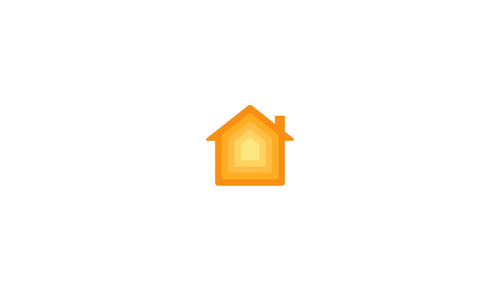

The Home tile, old mark and new
The tile keeps its white plate; only the logo changes. Drawn at the dock's own size (252 × 158).

BeforeHomeKit mark (homekit-tile.png)
AfterHome Assistant mark (vector)
Neighbourfor scale, unchanged

Neighbourfor scale, unchanged
After, at 2×same markup, same rule